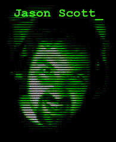

|  |
My name is Jason Scott. Since I was 9 years old, I have had a fervent love of computers and technology, bounded only by realities of economics and time. From the BBS world of the 80's to the early wonders of the Internet and to the Web and beyond, I've dabbled and dosed myself in whatever hot new computing fads and freakishness this wonderful world could come up with. As I entered into my late 20's, I realized I had been a part of many great things, and the perspective I had gained since that time gave me ideas. The most potent of these ideas has been to spread the feelings, horrors and astonishments of computing's history to people who came into it late, or never came into it at all. I wasn't a Big Player in the Turning Points of the last 20 years, but I was a good listener and a good watcher, and I hope that what I do bring to you will both excite and intrigue. If you were there, we'll reminisce together. And if you weren't there, do I have a story to tell you....
|
|
NEWS THOUGHTS LINKS SOURCES MAIL JASON |